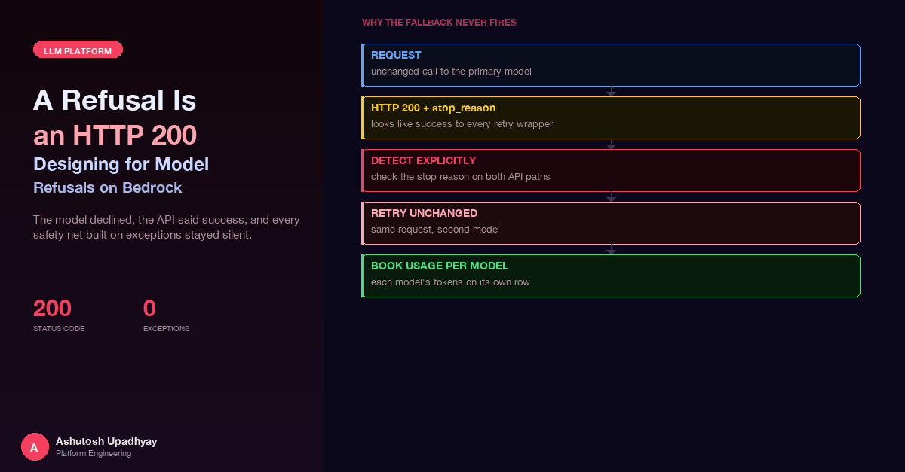

The model declined, the API said success, and every safety net built on exceptions stayed silent. How to detect refusals on both API paths and retry the unchanged request on a second model.
A scheduled job assembles a weekly research digest. One section of it is a short list of key results, and each line passes through a verifier before it is allowed into the email. The verifier is deliberately fail-closed: if it cannot confirm that a claim is supported by the text it cites, the claim does not ship. That is the right design for a document people read as fact. It also means that when the verifier goes quiet, the whole section goes quiet with it.
On a dry run of a new report edition against a real, busy week, every key result in the digest rendered as an em dash. The executive summary degraded to a code-only skeleton. Two optional sections vanished. Nothing raised an alarm. The logs contained two log lines about a missing or empty JSON reply, repeated for every call. The obvious suspects were prompt formatting and response parsing, and neither was wrong.
The verifier was not failing. It was being refused. The model had answered every verification call with an empty message and a stop reason that says, politely, that it chose not to continue. No exception. No error code. HTTP 200. My code looked for JSON, found nothing, and did precisely what fail-closed code does.
The one-line version: on current Claude models a refusal is a successful response. Anything that treats "the call did not raise" as "the call worked" will mishandle it, and every error-based fallback you own will sit idle while it happens.
The AWS model card for Claude Fable 5.1 states the contract plainly in its Content Restrictions section: the model "includes blocking classifiers for dual-use content in cybersecurity and life sciences. When a classifier blocks a request, the API returns a standard HTTP 200 response with stop_reason: "refusal" and a stop_details object containing the restriction category." It adds that refusal rates on that model "are materially higher than on previous Claude models", and gives the instruction that matters most for anyone writing a client: "Customers should handle stop_reason: "refusal" as a primary response path." (Claude Fable 5.1 model card, Content Restrictions.)
Billing is spelled out too: prompt-stage refusals, blocked before inference begins, are not billed; mid-stream refusals, blocked after partial output, are billed for the tokens generated before the block. Hold on to that second clause, because it means a late refusal is a cost event as well as a correctness event.
I checked the Claude Opus 5.5 model card for the same guidance. It is silent on refusals. What it does document is the surrounding surface: adaptive thinking that "is always on and cannot be disabled", a configurable effort level with a default of medium, and structured outputs listed as not supported on the runtime endpoint. (Claude Opus 5.5 model card.) So the refusal contract I describe below for Opus 5.5 is what I observed in live probes, not something that page promises. The safe reading of the Fable card is that any current model on the platform may return this shape, and a client should be ready for it everywhere.
What I observed, on the raw InvokeModel path: HTTP 200, stop_reason: "refusal", a stop_details object whose category was bio, an empty content array, and a handful of output tokens (6 to 8 in the first probe). The prompt that triggered it was a short, benign scientific fact-check. Three runs out of three were refused. The same prompt sent to Sonnet 5.5 and to Opus 5 was answered correctly, every time.
The agent framework we use, Strands Agents, talks to Bedrock through the Converse streaming API, not InvokeModel. I replayed the same prompt there and the vocabulary changed. Three runs out of three ended with stopReason: "content_filtered", 8 output tokens, and no content events at all. The stream opened, the stream closed, and nothing came between.
That is a nasty shape for a consumer. There is no partial text to inspect, no error event, and in a typical streaming handler no branch that runs, because branches hang off content. A non-streaming Converse call with the same prompt answered once, which told me something I did not want to hear: this is not a deterministic property of the prompt. It is a classifier decision, made per request.
| Path | Transport status | Refusal signal | Content |
|---|---|---|---|
| InvokeModel | HTTP 200 | stop_reason: "refusal" plus stop_details.category | Empty |
| Converse, streaming | Stream completes normally | stopReason: "content_filtered" | No content events |
| Guardrail block | Call completes | guardrail_intervened | Blocked whichever model generated it |
The third row is here on purpose. It looks like the other two and it is not the same thing, and the difference drives one of the design rules later.
The platform already had a model fallback. It lived in the thin client that wraps the Bedrock runtime: if a call raises a throttling, access or model-unavailable error, try the alternate model. That is the standard pattern and it works for the failures it was built for. Against a refusal it is structurally blind, because it is wired to exceptions and a refusal does not raise.
The refusals were also intermittent, which made them look like flakiness rather than a rule. A longer prompt in the same weekly job, the one that builds the summary cards, was refused two times out of two in one window and answered two times out of two in another. One of those refusals arrived after roughly 2,000 output tokens. By then the model had been generating for a while. A client that only inspects the first few events will not see it coming, and a client that bills on completion will pay for the partial answer.
So the failure had three properties that each defeat a different kind of monitoring. It is not an error, so error-rate alerts stay flat. It is not deterministic, so a single replayed test can pass. And it can be late, so a response that started well is not safe until the stop reason is read.
Before any fallback, the code must be able to say "this response was a refusal" on every path that touches the model. The rule I settled on is one small predicate over a closed set of stop reasons, applied at every call site, with nothing inferred from the absence of content.
# Stop reasons that mean "the model declined", not "the call failed".
REFUSAL_STOP_REASONS = {"refusal", "content_filtered"}
def is_refusal(stop_reason):
return (stop_reason or "") in REFUSAL_STOP_REASONS
# (a1) InvokeModel: the stop reason is in the response body.
def invoke_once(client, model_id, body):
resp = client.invoke_model(modelId=model_id, body=json.dumps(body))
result = json.loads(resp["body"].read())
if is_refusal(result.get("stop_reason")):
category = (result.get("stop_details") or {}).get("category", "unknown")
log.error("REFUSAL model=%s category=%s", model_id, category)
emit_metric("ModelRefusal", model=model_id)
return result, True
return result, False
# (a2) Converse streaming: the signal arrives in the closing metadata,
# and there may be no content events before it.
def stream_once(client, model_id, messages):
resp = client.converse_stream(modelId=model_id, messages=messages)
text, stop_reason = [], None
for event in resp["stream"]:
if "contentBlockDelta" in event:
text.append(event["contentBlockDelta"]["delta"].get("text", ""))
elif "messageStop" in event:
stop_reason = event["messageStop"]["stopReason"]
return "".join(text), is_refusal(stop_reason)Two details are easy to get wrong. The closed set deliberately omits guardrail_intervened, and I will come back to why. And the refusal metric is emitted with the model as a dimension, because once a fallback exists, the only way to see that it is working is to compare refusals on the primary model against refusals on the fallback.
The design question is what to do after detection. The tempting answers are all wrong. Retrying the same model repeats the same call: on that path the same model refused three times out of three, so the retry should go to a different model. Rewording the prompt until it passes is the opposite of what a safety classifier is for, and I did not want a system that quietly learned to argue with one.
What I built instead is narrower. When a call is refused, the same request, unchanged, goes to a different model. Nothing is rewritten, trimmed, re-worded or disguised. The second model applies its own safeguards and makes its own decision: it may answer, and it may just as well refuse. If it refuses too, that refusal is final and the stage reports it. The fallback model here is Opus 5, which is a current model with its own safety behaviour, and which in my probes answered the fact-check prompt that Opus 5.5 declined.
The rules, in the order I settled them with the product owner:
global. and regional inference-profile prefixes with one entry, and it means a model swap next quarter does not need a code change.For direct InvokeModel calls the retry is a plain helper: call, check, call again once, and rebuild the request body per model so that model-specific fields (effort, for instance) are right for the second model. For the agent loop it needed more care.
In Strands 1.51, an after-model-call hook can set retry = True on the event. That discards the just-produced message, which never reaches conversation history, and re-enters the model-call loop. Each iteration of that loop reads the agent's current model afresh. So if the hook assigns a new model to the agent and then sets the retry flag, the next call runs on the new model with the conversation intact, tool results included. No message surgery is required. In a probe, Opus 5 accepted the continuation of a tool-use turn that was produced by Opus 5.5, both with the earlier reasoning blocks left in and with them stripped out, so Bedrock accepted the mid-loop switch. Do not assume the first model's reasoning blocks carry over.
class RefusalRetryHook:
def __init__(self, primary_id, fallback_id, build_model, deadline=None):
self.current_id = primary_id
self.fallback_id = fallback_id
self.build_model = build_model # factory: same limits, cache config, effort
self.deadline = deadline
self.fell_back = False
self.usage_ledger = {} # model id -> token counts
def register_hooks(self, registry):
registry.add_callback(AfterModelCallEvent, self.on_after_call)
def on_after_call(self, event):
try:
if event.stop_response is None: # exception path, nothing to inspect
return
self.book_usage(event) # refused calls are billed too
if not is_refusal(event.stop_response.stop_reason):
return
can_retry = (
not self.fell_back
and self.fallback_id
and self.fallback_id != self.current_id
and not self.too_close_to_deadline() # e.g. under 120 s left
)
log.error("REFUSAL model=%s action=%s", self.current_id,
"fallback" if can_retry else "final")
emit_metric_async("ModelRefusal", model=self.current_id) # never block the loop
if can_retry:
event.agent.model = self.build_model(self.fallback_id)
self.current_id, self.fell_back = self.fallback_id, True
event.retry = True # set LAST
except Exception:
log.error("refusal hook error (ignored)", exc_info=True) # a hook must never raiseThree things in that sketch earned their place the hard way. The metric call is dispatched to a background thread, because the callback runs inside the framework's event loop and a synchronous metrics call would block every other request on that worker. The hook swallows its own exceptions, because a bug in telemetry must not turn a recoverable refusal into a crashed run. And the usage is booked before the refusal check, because, as the Fable card says, a mid-stream refusal is billed for what it generated.
There is a UI consequence worth a sentence. The chat front end replaces its streamed text when the final completion event arrives. If a refusal came late, after some text had already streamed, the fallback's answer simply replaces it on screen. No front-end change was needed.
A fallback changes the accounting as well as the control flow. A single run can now touch two models. If all tokens are booked under whichever model the router originally chose, the usage ledger is wrong in a way that no test of the retry logic will catch: the counts will be internally consistent and attributed to the wrong price line.
So each sub-agent's response carries a per-model token breakdown, the model that produced the final text, and a note of any fallback that happened. The router sums the breakdowns across stages, and the usage writer emits one row per model. Each query counts once, on the row of the model that answered, which also carries the duration, so that "number of requests" and "latency of the answer" stay attributable to something real. Responses from older pods during a rolling deploy carry no breakdown and are booked under the routing model as before, which keeps mixed-version fleets interoperable.
This matters for the same reason the Cost Explorer trap in the usage analytics post matters: the bill is organised per model, so your internal ledger has to be organised per model if the two are ever to be reconciled. The design goal was simply that the ledger says which model did the work. The answer shown to users reports the real model as well, in logs, in the usage record, in a trace tag, and in the refusal metric, with no banner added to the answer itself.
The refusal work surfaced a cluster of neighbouring constraints that bite when you move an agent to the 5.5 tier. The sampling-parameter and thinking-budget changes are covered in the Opus 5 migration post, so I will not repeat them. These are the ones that specifically shaped this design.
| Behaviour | What I observed | Where it is documented |
|---|---|---|
| Forced tool choice | Rejected with a validation error on Sonnet 5.5 and Opus 5.5; only the automatic setting is accepted | My live probes; not on the Opus 5.5 card |
| Structured output | The Converse text-format option is rejected on Sonnet 5, Sonnet 5.5, Opus 5 and Opus 5.5; accepted on Sonnet 4.6 and Haiku 4.5 | Opus 5.5 card lists structured outputs as not supported; the per-model breakdown is from my probes |
| Thinking | Cannot be disabled on 5.5 | Opus 5.5 card: adaptive thinking is always on |
| Default effort | Medium on Opus 5.5; high on Opus 5 | Opus 5.5 card for the medium default; Opus 5 figure is from my notes |
Two of those interact with the fallback. First, structured output. The framework's structured-output feature quietly falls back to forced tool choice, and forced tool choice is itself rejected on the 5.5 models, so there is no supported schema-enforcement path on this tier. The replacement is unglamorous: ask for the shape in prose, parse it, validate it, and treat a parse failure as a first-class outcome. Which brings this story full circle, because a parser that fails on an empty refusal and a parser that fails on malformed JSON are logging the same message unless you teach them to look at the stop reason first.
Second, effort. Because the default differs between the two models in the fallback pair, a retry that inherits "the default" silently changes how hard the second model thinks. The hook factory therefore recomputes effort for the model it builds, and the direct-call helper rebuilds the whole request body per model. The rule is to set effort explicitly on every call and never rely on a per-model default.
A reasonable objection: a refusal is a model doing what it was designed to do, so why engineer around it instead of showing the user a message? For a chat turn, surfacing a clear notice is sometimes the right answer, and the system still does that when the fallback also refuses. But the same hook covers the interactive research stages (the writer and reviewer agents and the single-agent research path) as well as the scheduled report, and these workloads are compound. The digest runs unattended and its verifier sits in the middle of a pipeline whose downstream steps assume an answer. A refusal in the middle of a multi-stage job that is reported as an empty string is strictly worse than either outcome it could have produced, because the operator sees neither the answer nor the reason.
The distinction I would offer is between the model's decision and the platform's response to it. The decision belongs to the model and its safeguards, and the platform must not try to override it. The response belongs to the platform: route the unchanged request to a second model with its own safeguards, log the event with its category, meter it, and fail closed and loudly if both decline. Every one of those is engineering we control, and none of it touches the classifier.
Unit tests prove that the hook sets a model and a flag. They do not prove the system recovered. The check that mattered was a dry run of the previous busy week's digest against the live model pair: all three of the refused calls were answered by the fallback, all 10 of the key results came through, and the verifier passed 17 of 17. The section that had been blanked was back.
I would make the same point about the original miss as about the fix. The job reported success when it was wrong. The only reliable signal was the artifact itself: did the key results have text in them? Checking the output the reader sees, rather than the status the scheduler reports, is what found the problem and what confirmed the repair.
The fallback handles a refusal after it happens. The natural next step is to find refusals before they reach production, with a refusal canary. Every fixed prompt in the codebase (system prompts, verifier prompts, extraction and summarisation templates) is a known input that can be replayed. Before any model switch, run each one against the candidate model several times, because the behaviour is intermittent, and record a refusal rate per prompt.
That turns a model upgrade into a gated release: a candidate model does not ship if any prompt's refusal rate crosses a threshold, and a prompt that trips it is routed to the fallback tier by configuration before anyone has been affected. The same per-prompt refusal rate, exported as a standing metric with the model as a dimension, gives a trend line that shows a classifier change on the provider's side as a step in a graph rather than as a blank section in a weekly email.
stop_reason: "refusal" as a primary response path, with the category in stop_details.stop_reason: "refusal" on InvokeModel, stopReason: "content_filtered" on Converse streaming, where there may be no content events at all. Check the stop reason explicitly on every path.